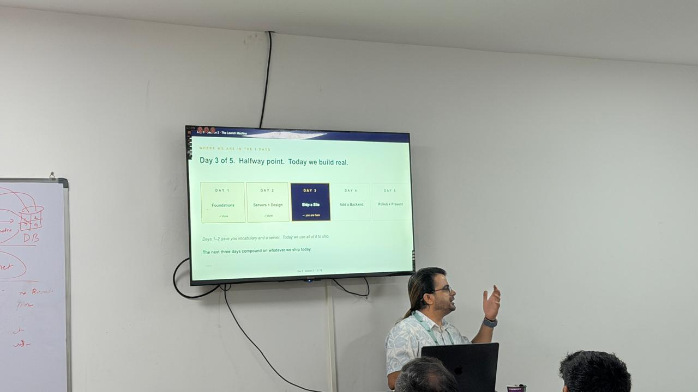
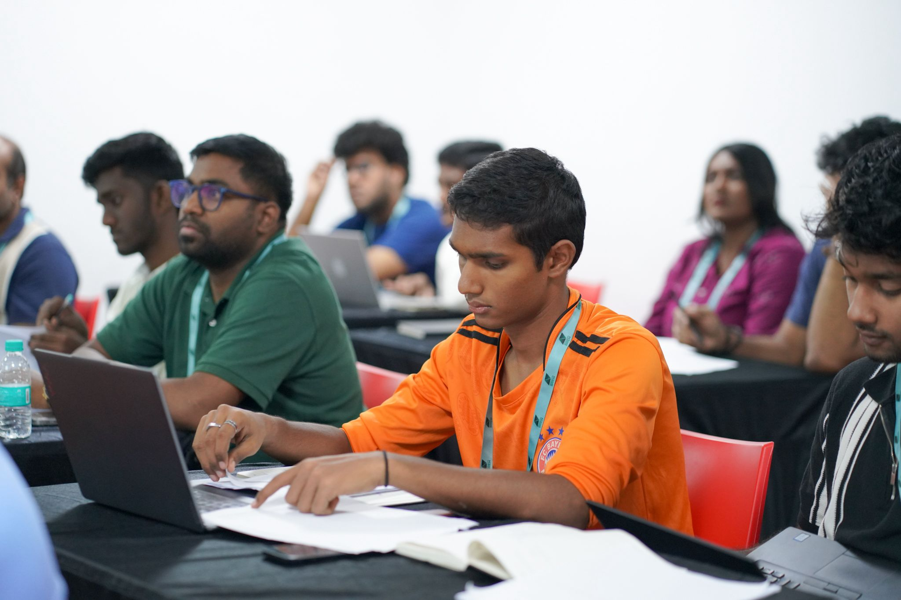

📅 Day 3
Git, GitHub & Live Deployment
The full pipeline — scaffold, commit, push, deploy. Today we shipped a real live website using Git, GitHub, and Vercel.
Overview
Day 3 was probably the most exciting day so far. We moved from theory and setup into actually building and shipping something live. The focus was on the full development pipeline — from creating files locally all the way to deploying a live website on the internet.
We explored how Git works as a version control system, connected our work to GitHub repositories, and then deployed everything live using Vercel. The sir also deepened our understanding of how to use Claude effectively by teaching us a proper prompting framework.
What I Learned
- The full development pipeline: Scaffold → Commit → Push → Deploy. Each step has a clear purpose and order.
- How Git works as a version control system — tracking changes, creating snapshots, and allowing rollback when needed.
- Core Git commands:
git init,git add,git commit, andgit push. - What a GitHub repository is — a remote location where your code lives and can be shared or deployed from.
- How Vercel connects to a GitHub repo and automatically deploys updates every time you push new code.
- The importance of structured prompts when working with Claude — using the WHO, WHAT, HOW, and CONTENT framework to get better results.
- How to build multiple HTML pages with consistent navigation and linking them together correctly.
- Best practices for file structure, naming conventions, and keeping a project clean and organised.
"We explored how Claude helps not just write code, but design, structure, and reason about the entire project — prompts are a skill in themselves."
What I Did
- Initialised a new Git repository locally using
git init. - Created an initial project structure — HTML files, a CSS stylesheet, and a JavaScript file.
- Staged files using
git add .and made a first commit with a clear, descriptive message. - Pushed the project to a new GitHub repository for the first time.
- Connected the GitHub repo to Vercel and triggered a live deployment — the site went live within seconds.
- Built multiple pages with a shared navigation bar that linked them all together correctly.
- Improved the design and usability of the site — better spacing, fonts, and layout.
- Practised writing structured prompts for Claude using the WHO, WHAT, HOW, CONTENT format to generate better code and content.
The Deployment Pipeline
📁
Scaffold
Create files
→
✅
Commit
git commit
→
⬆️
Push
git push
→
🚀
Deploy
Vercel live
Photos from Day 3

GitHub Repository Setup

Vercel Deployment Dashboard